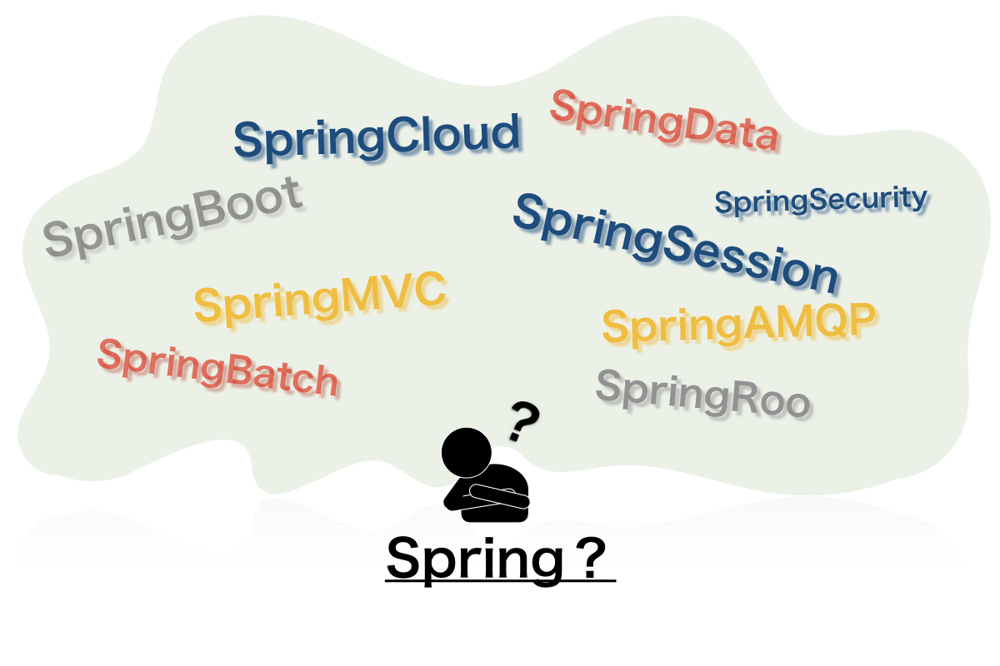
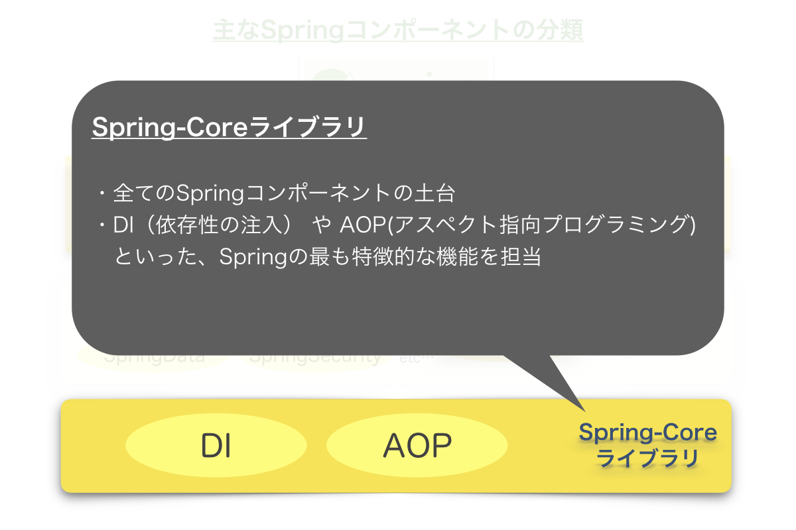
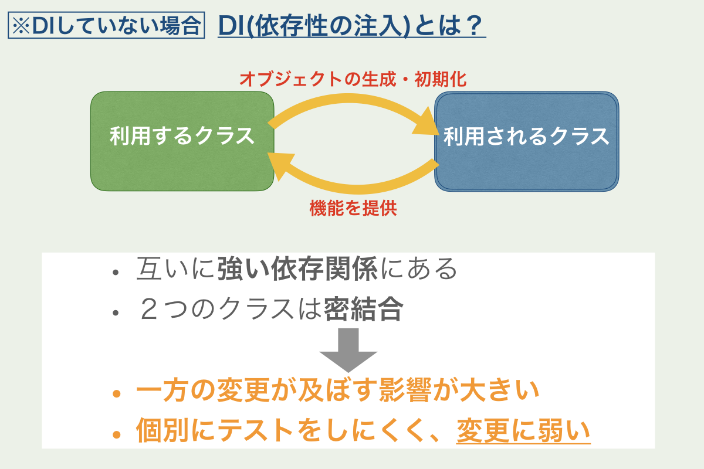
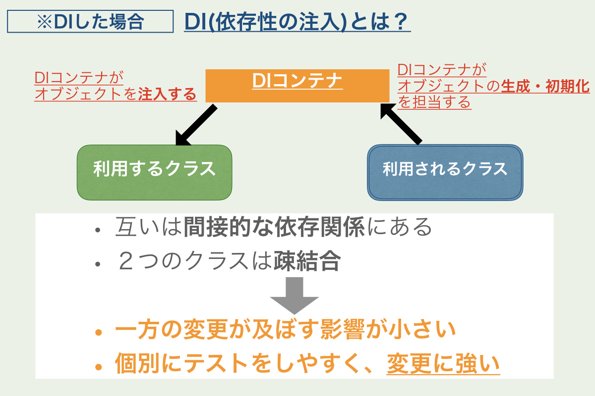
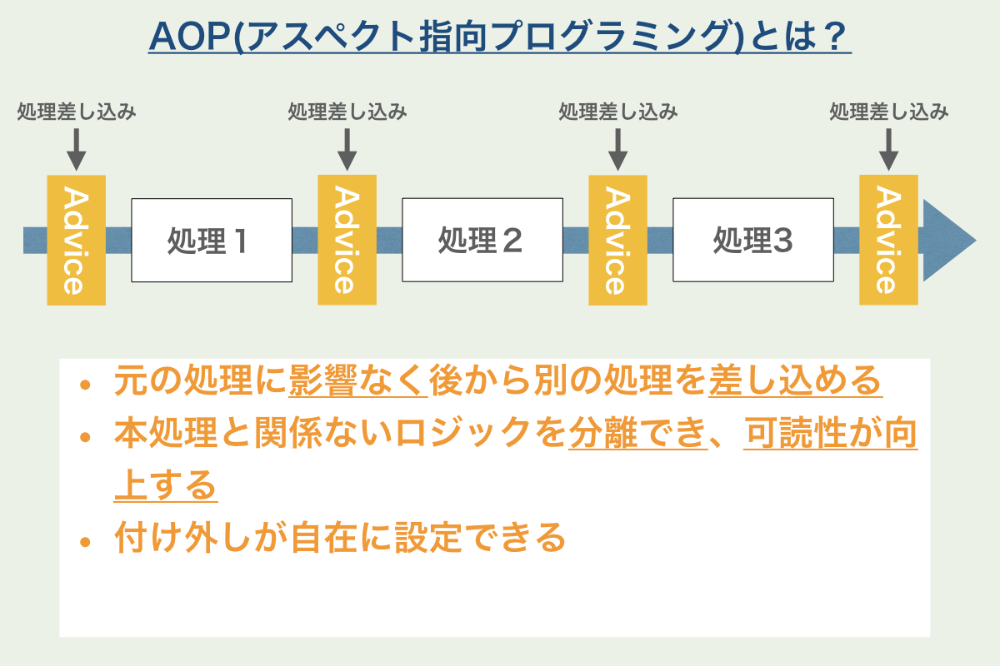
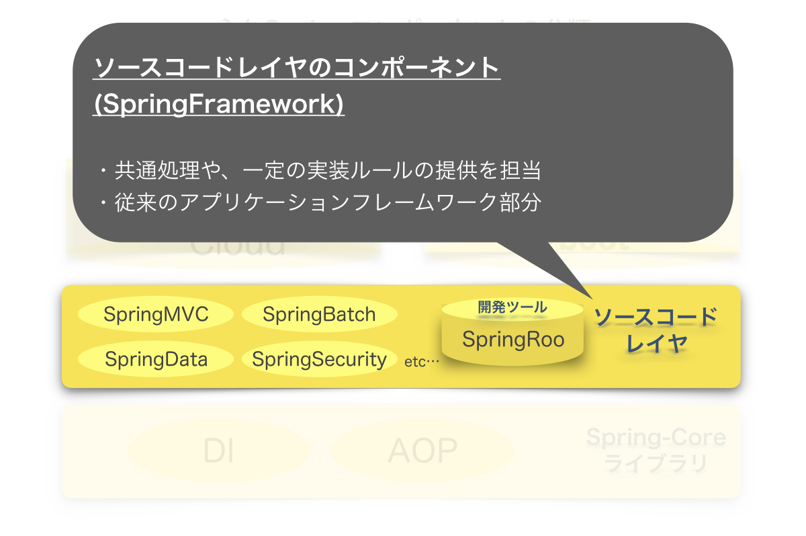
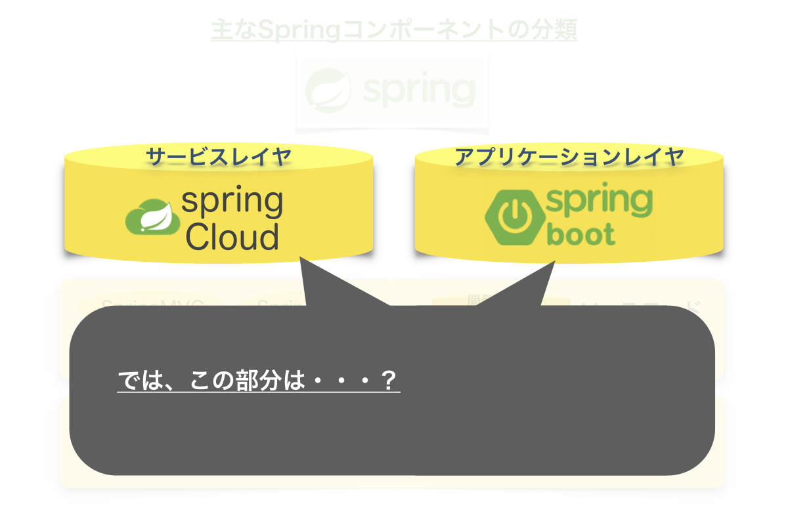

ネットや書籍では得られない
実践的勉強会
 SpringBoot
SpringBoot
- Pivotal社が提供するJavaプラットフォームのフレームワーク(?)
- 近年Javaのフレームワーク(?)として大注目
SpringProjectの全体像

ややこしいので
主なSpringコンポーネントを分類して ➜
みました





DI・AOPにより
- 変更に強く
- 再利用性の高い
アプリケーション開発が可能に！


SpringFrameworkって何？
SpringFrameworkは・・・
- 様々なレイヤ・役割のライブラリ・フレームワークを組み合わせて利用するもの
- フルスタックなフレームワークではない
- 「SpringFramework」という単体のフレームワークは存在しない
SpringFrameworks
とでも呼ぶべきライブラリ群
SpringBootって何？
SpringBootは
SpringFrameworkの中の1つなの?
SpringBootは
SpringFrameworkを
より簡単に
より効率的に
使うための仕組み
これまでの開発効率向上の為のフレームワークではなく、
アプリケーションとしての管理・運用効率を上げるための
1つ上のレイヤのフレームワーク
ここまでのまとめ
Agenda
- SpringProjectの全体像を把握しよう
- SpringProjectの全体像
- SpringFrameworkってなに？
- SpringBootってなに？
- SpringBootの特徴を知ろう
- Webコンテナの組み込みビルド
- Bean定義の自動化
- パッケージ管理の簡素化
- SpringBootの歩き方
- 情報検索のコツ
- Starterを使いこなす